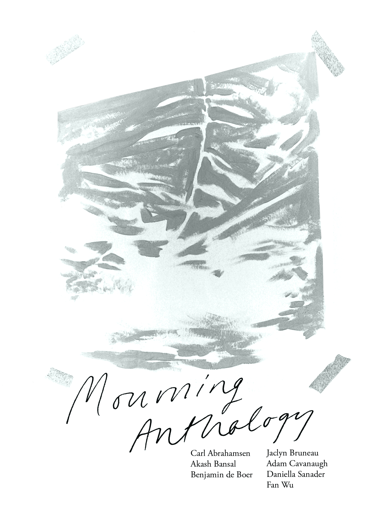

Mourning Anthology
Published by Art Metropole: softcover, 114pg, perfect-bound, b/w.
Cover & publication design by Rowan Lynch
Featuring poetry and prose by Carl Abrahamsen, Akash Bansal, Benjamin de Boer, Jaclyn Bruneau, Adam Cavanaugh, Daniella Sanader & Fan Wu. Editor: Fan Wu. Mourning Anthology is the result of a series of workshops conducted at Art Metropole in 2017.
“Seven people met over the summer of 2017 to engage the difficult questions of mourning, grief, and the (im)possibilities of their representation. Together we wove across the texts of Roland Barthes, Bhanu Khapil, Lucretius, Ludwig Wittgenstein, Michelangelo Antonioni, Barbara Loden, Maurice Blanchot, Lydia Davis, and bell hooks; we met on rooftops and in basements of bookstores. This book is our invitation for you to think and feel with us through the paradoxes of writing mourning & the painful productivity of grief.”
Available for purchase through Art Metropole
